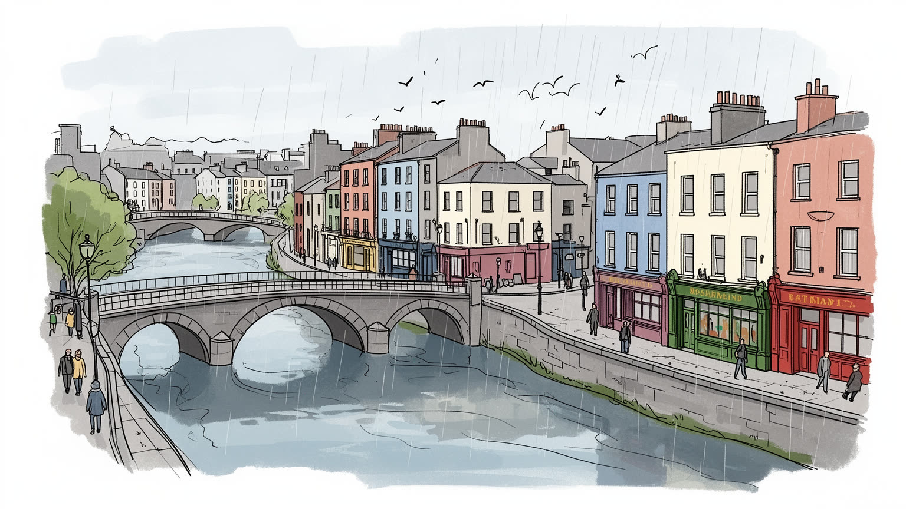
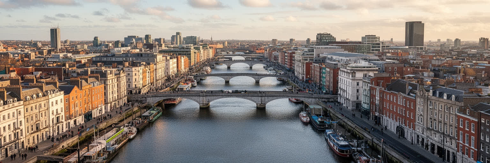
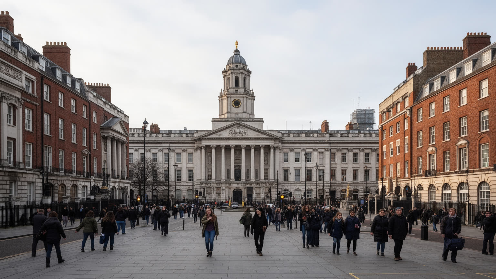
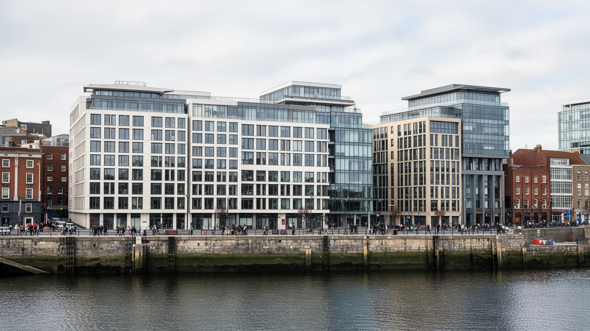
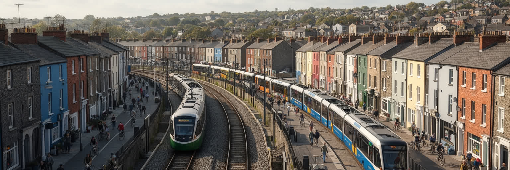
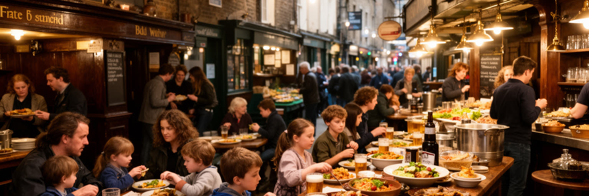
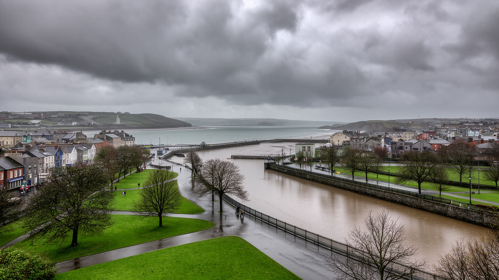
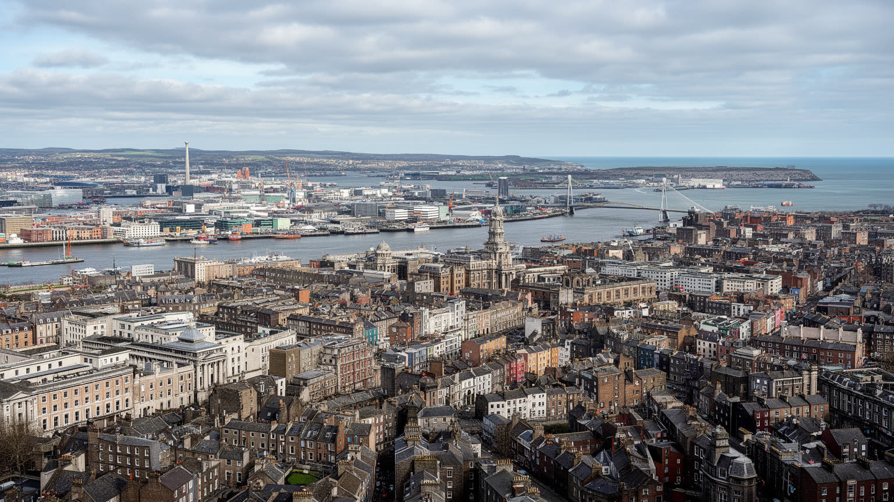

地政学
ダブリンはアイルランド共和国の首都として議会、政府、省庁、大使館、港、空港を集めます。英国史、北アイルランド、欧州連合、大西洋経済を意識する都市で、島国の国家運営と国際投資の重要な窓口でもあります。

🇮🇪 アイルランド / ヨーロッパ / World City Atlas
リフィー川河口の首都です。国家機関、欧州のテック拠点、金融、文学、独立運動の記憶、大学、移民、住宅危機、酒場文化、海辺の気候が近い距離で重なる都市です。
都市の骨格
ダブリンはリフィー川を東へたどると港とアイリッシュ海に開き、西へ行くと住宅地と大学、行政、企業地区が連なります。小さな首都の密度が、政治、文学、労働、観光の距離を近くしています。

ダブリンはアイルランド共和国の首都として議会、政府、省庁、大使館、港、空港を集めます。英国史、北アイルランド、欧州連合、大西洋経済を意識する都市で、島国の国家運営と国際投資の重要な窓口でもあります。
テック、金融、製薬、行政、大学、観光、法律、会計が高所得の仕事を作る一方、ホテル、清掃、介護、配送、飲食、建設の労働が都市を支えます。多国籍企業の成長と高い家賃が、労働者の日常を強く揺らす現実もあります。
カトリック教会、聖堂、文学、演劇、伝統音楽、酒場、移民の礼拝が同じ街路に重なります。信仰は国家形成の記憶とも結びつき、世俗化と多宗教化の中で新しい公共性を探し、祭礼と広場の声、街の世代差も映します。
観光客は城、聖堂、トリニティ・カレッジ、文学の足跡、酒場、海辺を巡りますが、住民は家賃、通勤、保育、医療、学生住宅が切実です。歩きやすい中心部の魅力と住み続ける難しさを同時に読む街です。海風も近いです。

ダブリンを読む入口は、リフィー川が西から東へ市街を横切り、アイリッシュ海へ注ぐ地形です。川は北岸と南岸を分けるだけでなく、橋、埠頭、税関、倉庫、金融地区、遊歩道、住宅地を連ねる軸になってきました。東へ進むほど港とドックランズが現れ、多国籍企業のオフィスや再開発地区が、古い港湾労働の記憶と重なります。西側には古い市場、大学、官庁、住宅地が広がり、リフィー川は観光客の散歩道であると同時に、通勤と生活の境目でもあります。濡れた石畳、低い雲、橋を抜ける海風、パブから漏れる音が、川沿いの距離感を身体で覚えさせます。朝のランナーや昼休みの学生、買い物袋を持つ高齢者が同じ岸辺を使い、川は観光の背景より生活の歩道に近い存在です。中心部の距離は短いものの、橋の位置、バス路線、鉄道駅、家賃の差が、住民の移動と機会を細かく分けます。川沿いの再開発は都市の顔を明るくした一方、水辺の地価上昇や公共空間の使い方をめぐる緊張も生みます。橋を渡るたびに、行政、金融、大学、酒場、移民商店、学生の下宿が近い距離で入れ替わります。洪水や潮位、古い護岸の管理も、川沿いの発展を支える見えにくい条件です。水面の幅と橋の間隔は、歩く速さや地区の心理的な近さまで日々変えます。小さな首都の見えやすさが、都市の魅力と課題の両方を濃くしています。

ダブリンはアイルランド共和国の首都として、議会、首相府、省庁、裁判所、大統領公邸、大使館、国立文化施設を集めます。都市の政治性は巨大な官庁街だけでなく、ジョージアン様式の広場、大学、裁判所前の集会、記念碑、新聞社、放送局、法律事務所の近さに表れます。アイルランド国家は英国支配、独立戦争、内戦、北アイルランド問題、欧州連合加盟、近年の社会改革を経てきたため、首都の街路には制度の成熟と傷の記憶が同時に刻まれています。政府機関は雇用を生み、地方から学生や公務員を引き寄せ、全国の政策決定をこの都市へ集めます。一方で、首都集中は住宅価格、交通混雑、地方との格差を広げる要因にもなります。欧州連合との関係では、ダブリンは小国の首都でありながら、多国籍企業の税務、金融規制、データ保護、移民政策、気候政策をめぐる国際的な交渉の場でもあります。英国との関係は、地理的にも歴史的にも日常の背後にあり、ブレグジット後は港湾、通商、北アイルランドとの制度調整が一段と重要になりました。ダブリンを首都として読むには、観光名所の城や議事堂だけでなく、デモ、司法、行政窓口、メディア、地方から来る学生の生活を同じ地図に置く必要があります。市民投票の経験も、街の議論を政治へ近づけてきました。国家の小ささは、政治と市民生活の距離を近くし、決定の影響を街に早く響かせます。

現代のダブリンを語るうえで、テックと金融は欠かせません。ドックランズやグランド・カナル周辺には、多国籍のデジタル企業、金融サービス、法律、会計、コンサルティング、データ関連の仕事が集まり、アイルランド経済の国際的な顔を形づくっています。英語圏、欧州連合市場、法人税制度、教育水準、若い労働力が企業を引き寄せ、都市は小国の首都を超える経済的な重みを持つようになりました。高賃金の専門職はカフェ、買い物、住宅、交通、文化消費を押し上げる一方、家賃や物価の上昇は学生、若い家族、低賃金労働者、移民に重くのしかかります。企業のオフィスが川沿いの景観を洗練させても、清掃、警備、配達、受付、飲食、保育、介護の仕事なしに都市は動きません。観光労働や路上経済も中心部のにぎわいを支え、ガイド、露店、演奏者、深夜の清掃が訪問者の時間を形にします。デジタル経済は軽やかに見えますが、実際にはオフィス床、電力、通信、住宅、空港、移民制度、大学教育に支えられた都市産業です。国際企業への依存は税収と雇用をもたらしますが、世界的な景気後退、規制変更、人員削減が首都にすぐ影響する脆さもあります。ダブリンの成長を読むには、企業ロゴではなく、働く人の通勤時間、家賃負担、労働許可、公共サービスへの圧力まで見る必要があります。富が増えるほど、その利益を住宅、交通、教育へ戻せるかが都市の実力になります。
ダブリンは文学の都市として世界的に知られています。ジョイス、イェイツ、ベケット、ショー、ワイルド、ヒーニーにつながる文学の記憶は、図書館、大学、劇場、出版、酒場、街角の会話に深く浸透しています。文学は観光資源にとどまらず、植民地支配、宗教、階級、移民、言語、家族、都市の退屈と欲望を表現する方法でした。英語で書かれた作品の背後には、アイルランド語の衰退と復興、教育制度、独立運動、カトリック社会の規範、移民先から戻る視線があります。トリニティ・カレッジや国立図書館を訪れると、書物は静かな遺産に見えますが、ダブリンの文学はむしろ街を歩き、聞き、記憶する実践です。酒場での語り、劇場の皮肉、新聞の論争、大学の朗読、地域の創作活動が、都市の公共圏を作ってきました。Bloomsday、文学フェスや書店も、読者、学生、作家、旅行者をつなぐ小さな公共空間になります。文化産業は観光と教育を支えますが、作家、俳優、音楽家、編集者、舞台スタッフが高い家賃の中で生活できるかは切実な論点です。創作の場、安い住居、小劇場、図書館、学校、移民の新しい言葉が重なってこそ、ダブリンは過去の作家の記念都市ではなく、現在も書かれ続ける都市になります。古い作品をなぞる散歩は入口にすぎず、今日の路上で誰が物語を語れるかを見ることが大切です。声の多さが文化を更新します。
ダブリンの街路には、アイルランド独立をめぐる記憶が濃く残ります。中央郵便局、キルメイナム刑務所、城、裁判所、墓地、記念碑、蜂起の舞台となった通りは、国家の物語を観光客にも住民にも語りかけます。独立の記憶は単純な英雄譚ではありません。英国支配への抵抗、第一次世界大戦、復活祭蜂起、独立戦争、内戦、共和主義、労働運動、女性の役割、北アイルランドとの関係が複雑に絡みます。St Patrick's Dayの行進が緑の祝祭として街を満たす日にも、国家、宗教、移民、観光が同じ道路を共有します。記念式典や博物館は国家の誇りを支える一方、誰の犠牲が強調され、誰の経験が脇に置かれるかという問いも生みます。カトリック、プロテスタント、労働者、女性、移民、英国との関係を持つ住民が、同じ過去を同じ意味で受け止めるわけではありません。ダブリンを記憶の都市として読むには、銃撃の跡や記念碑だけでなく、学校教育、追悼行事、政治演説、家族の語り、北アイルランドから来る視線を含める必要があります。独立の記憶は現在の外交、憲法、社会改革、言語政策、警察への信頼にも影響します。歴史を誇ることと、歴史の暴力を丁寧に扱うことは対立しません。観光で訪れる場所も、住民にとっては日々の通勤路や待ち合わせの場所であり、過去は生活の背景に静かに重なります。
ダブリンの最も切実な都市問題の一つは住宅です。テックと金融の成長、大学都市としての需要、人口増加、短期滞在、投資、建設費の高騰、供給不足が重なり、家賃と購入価格は多くの住民にとって重い負担になっています。中心部に近い古い住宅は魅力的ですが、改修費や賃料が上がれば、学生、移民、若い家族、低所得労働者は遠い郊外や過密な住まいへ押し出されます。社会住宅の不足とホームレスの増加は、経済成長の陰で都市の公平性を問います。高賃金の国際企業が集まる街で、ホテルの清掃、介護、飲食、保育、配送を担う人が住めなければ、都市のサービスは足元から不安定になります。子どもを育てる世帯は学校や公園の近さを求め、高齢者は暖房費、通院、孤立、歩道の安全に敏感です。住宅危機は個人の家計だけでなく、学校、医療、交通、企業採用、文化活動にも影響します。遠距離通勤が増えれば、時間と交通費が家族の暮らしを圧迫し、郊外の道路や鉄道にも負荷がかかります。新築の増加は必要ですが、ただ高額な物件を並べるだけでは問題は解けません。公共住宅、家賃規制、空き家活用、学生寮、協同組合住宅、交通と一体の開発が求められます。空き地の使い方や高さ規制も、近隣の合意と供給量の間で難しい判断を迫ります。ダブリンの成長は、普通の働き手が安心して暮らせる住まいを用意できるかで測られます。
ダブリンの人口構成は、この数十年で大きく変わりました。かつて多くのアイルランド人が海外へ移民した都市は、いまでは欧州、アジア、アフリカ、ラテンアメリカから来る労働者、学生、研究者、難民、家族を受け入れる都市になっています。トリニティ・カレッジ、ユニバーシティ・カレッジ・ダブリン、語学学校は若者を集め、テック企業や医療、飲食、介護、建設、配送は多様な労働力を必要とします。英語を学ぶ学生、欧州内の若い専門職、ブラジルやインド、ポーランド、ナイジェリア、中国などにつながる住民が、移民商店、教会、モスク、寺院、スポーツクラブ、GAAの練習、食堂、学校に新しい日常を作ります。多文化性は街を活気づけますが、住居探し、労働許可、資格認定、差別、医療アクセス、学校の言語支援は現実の論点です。学生の増加は都市の文化と消費を支える一方、学生住宅の不足が一般賃貸市場をさらに圧迫します。若い移民が夜の飲食や配達を担いながら、長期的な生活基盤を築きにくい状況もあります。ダブリンを移民と学生の都市として読むには、大学のキャンパスだけでなく、下宿、送金窓口、多言語の掲示、礼拝、バス停、夜勤の職場、安い食材を売る店を見る必要があります。多様性は住宅、教育、労働、医療の制度で支えられて初めて都市の力になります。若い声を受け止められるかが、首都の将来を左右します。

ダブリンの交通は、コンパクトな中心部の歩きやすさと、広がる郊外の通勤負担の間で揺れています。市内にはバス、路面電車、近郊鉄道、自転車道、空港連絡、港への道路があり、リフィー川をまたぐ橋が移動の結節点になります。観光客には徒歩で回れる中心部が印象的ですが、住民の多くは高い住宅費を避けて郊外へ住み、毎朝のバス、鉄道、車で中心部や企業地区へ向かいます。路線の混雑、乗り換え、運賃、終電、雨風、保育園への寄り道は、家計以上に生活時間を削ります。海辺の遊歩道ではランニングや散歩が日課になり、週末には湾岸へ向かう電車とバスが住民の気分転換を運びます。ドックランズや郊外のビジネスパークで働く人にとって、交通の弱さは就職機会そのものを狭めます。車依存が強まれば渋滞、排出、駐車、道路安全が問題になり、低所得世帯ほど遠くて不便な場所に追いやられやすくなります。公共交通の拡充は、単なる利便性ではなく住宅政策と気候政策の一部です。新しい住宅をどこに建て、学校や医療をどう配置し、鉄道やバスをどの頻度で走らせるかが、首都圏全体の公平性を決めます。自転車道や歩道の安全も、短い移動を車に頼らないための重要な条件です。ダブリンを交通都市として読むには、有名な橋や空港だけでなく、雨の朝にバスを待つ介護職、大学へ通う学生、夜遅く帰る飲食店員、自転車で川沿いを走る通勤者を同じ地図に置く必要があります。移動の質は、都市の自由を測る尺度です。

ダブリンの日常文化を語るうえで、酒場と食は欠かせません。パブは観光客が伝統音楽やギネスを楽しむ場所であると同時に、住民の会話、追悼、スポーツ観戦、政治談義、仕事帰りの息抜き、地域ラジオやSNSの話題、寄付活動が行われる社交の場でもあります。雨に濡れた石畳を歩くと、扉の奥からフィドル、話し声、グラスの音が重なって聞こえます。酒場文化は魅力的ですが、飲酒問題、騒音、深夜労働、観光地化、中心部の価格上昇とも隣り合わせです。食の面では、伝統的な煮込みやパン、乳製品、海産物に加え、移民の料理、学生向けの安い店、国際企業で働く人向けのカフェやレストランが増え、都市の味は大きく広がりました。市場、ベーカリー、フィッシュ・アンド・チップス店、アジア系食料品店、ハラール店、週末のブランチは、ダブリンが単一の古い首都ではなく、移動する人びとの都市であることを示します。買い物の通りと酒場街は観光消費を集める一方、店員、厨房、清掃、警備、路上演奏の労働で成り立ちます。観光客が集まるテンプルバーの賑わいだけを見れば、都市は陽気に見えます。しかし、店を開ける人、厨房で働く人、近隣で眠る住民の時間まで含めると、夜の文化は調整を必要とする公共空間になります。試合の日には、GAAやラグビーの声援で酒場が地域の応援席にもなります。日常の店が残るほど、都市は住民のための場所であり続けます。

ダブリンの気候は海洋性で、極端な暑さや寒さよりも、変わりやすい空、雨、風、湿り気、涼しい夏が暮らしの感覚を作ります。海に近いことは、散歩、ランニング、ヨット、海水浴、湾岸の景観、鳥の生息地を日常へ近づける一方、高潮、沿岸浸食、強風、排水、低地の浸水リスクももたらします。リフィー川沿いでは雲の切れ目、冷たい海風、湿った石畳、傘をたたく雨音が、短い外出にも都市の輪郭を与えます。気候変動は遠い未来の話ではなく、港湾、住宅、道路、鉄道、下水、保険、公共空間に関わる現実の論点です。ダブリン湾の海辺は、中心部から短時間で行ける大きな魅力ですが、自然保護と開発、住宅需要、観光利用をどう調整するかが問われます。雨の多い都市では、街路樹、透水性の舗装、公園、川沿いの緑、屋根の断熱、公共交通の快適さが生活の質を左右します。暑さが比較的穏やかな都市でも、熱波が増えれば高齢者、屋外労働者、古い住宅に住む人への影響が大きくなります。気候対策は海岸の防護だけでなく、住宅改修、緑地の公平な配置、通勤時の避難情報、多言語の警報、港の事業継続を含みます。晴れた湾岸散歩と同時に、雨水の流れ、古い下水、低地の住宅、海辺の生態系を見る必要があります。海風は都市に開放感を与えますが、その近さは備えを怠れない条件でもあります。

ダブリンを読むことは、小さな首都の近さを多面的に見ることです。リフィー川を渡れば、国家機関、大学、文学の記憶、酒場、テック企業、金融オフィス、移民商店、学生の下宿、古い住宅、港湾の空気が短い距離で現れます。アイルランドの政治と独立の記憶は、観光名所の背景にとどまらず、社会改革、北アイルランドとの関係、欧州連合、移民政策、言語の復興に今も影響しています。Aviva StadiumやCroke Parkでは、ラグビー、サッカー、Gaelic gamesの声援が都市の週末を変え、酒場や交通、地域の会話まで動かします。経済面では、多国籍企業と金融が都市を豊かにし、世界中の人材を引き寄せる一方、住宅危機と生活費の上昇が住民の選択肢を狭めます。文学と音楽は都市の名声を支えますが、文化を担う人が住み続けられなければ、記念だけが残ります。酒場や食堂の楽しさは、深夜労働、観光混雑、近隣の静けさとの調整を必要とします。海辺の気候と緑は都市を柔らかく見せますが、高潮、雨水、交通、郊外化への備えも欠かせません。ダブリンの重要性は、巨大さではなく、国家、企業、記憶、生活の距離が近いことにあります。世界へ開く首都であり続けるには、企業誘致や観光だけでなく、住宅、交通、学校、礼拝、文化の場を守る地道な制度が必要です。川沿いを歩くと、その課題が抽象論ではなく、橋、家賃、職場、店、海風として見えてきます。